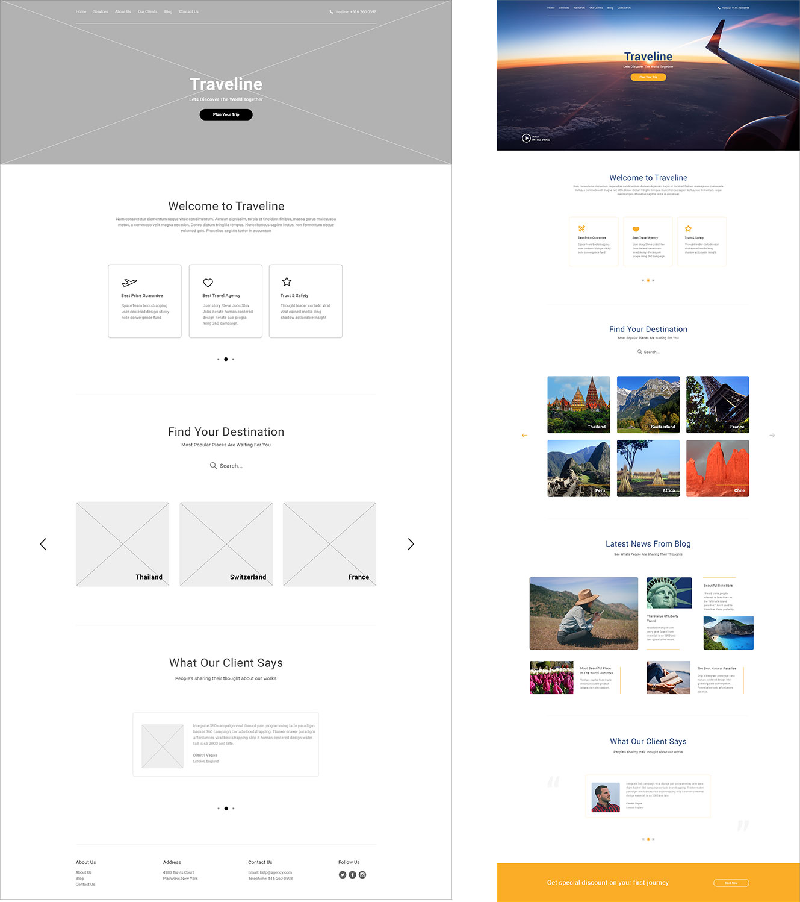
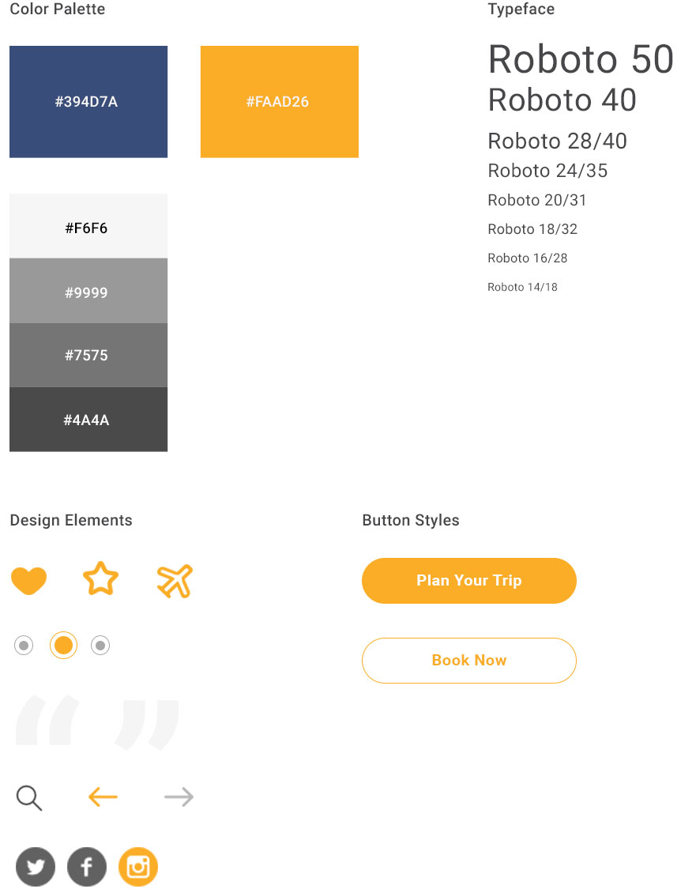

Traveline is a startup that wants to take part in the online travel industry. My work was to align their concept with the User Centered Design model (empathize, define the problem, ideate, prototype, test and iterate). With this approach, we were able to define Traveline's Target Audience, Brand Identity, Style Guide and come up with different ideas to test the Landing Page - our first design piece.
It was agreed with the client, that before designing Traveline's website, we would develop a Landing Page, which would be the test sample that will become the Homepage and the main template to follow for all secondary pages.
Following this blueprint, our immediate goals were to make sure with this first piece, we were able to reach high engagement, generate qualified leads and raise brand awareness.

Discovery Session
This phase consisted of:
Learning about the company, their industry, business model, short and long-term goals
Performing a SWOT analisis
Understanding their users as well as defining the Target Audience
Creating a Customer Profile
Performing a Competition Audit
Prioritizing Goals
These answers were crucial in defining the next steps of the UI and UX process.
Explore Solutions
Wireframes and a prototype were created to test first ideas. It was of utter importance to test early to get important feedback in these first crucial stages. Testing with our prototype, prevented needless reworks and saved us time, energy and resources. Providing a layout that fulfilled the goals proposed at the start of the project.
Design
To start my design process, I used the information gathered in the Discovery Session phase, as well as integrate in every design decision:
The user’s needs
Demonstrate that I understand who the target audience is
Understand the user's pain points that have led them to Traveline
Provide a solution to the user's pain points
Make sure the site is functional and user-friendly on all devices
When performing a Brand Audit, I like to first start with an exercise that generates words that are more visual and less abstract. I facilitate the conversation, but the client has to come up with these keywords. At the end of the exercise, we came up with 2 primary attributes which represented Traveline’s overall image “Modern and trustworthy”.
With the above, I was able to:
Develop Traveline's Brand Identity, which would represent the company genuinely and connect and identify emotionally with the audience.
Design all visual elements
Integrate language we could use to connect, advertise, and embody for example on social media
Know what to avoid
Make navigation simple and intuitive
Design CTAs in a way that grabs the user’s attention without overwhelming them, by the use of contrast, instead of adding too many buttons to the page.
Keep imagery authentic, relevant, relatable and true to the brand. For which I avoided stock images and we invested in purchasing images that connected with the user.
Keep loading speed under two or three seconds
Consider long-term sustainability in all design decisions
Think in terms of responsive, scalable systems
Come up with design solutions that are viable, as I have strong technical knowledge of how web-based technologies apply to design.
With the idea of “don’t make users think, but make them act”, all throughout the homepage the user is guided in each section with actionable items like “plan your trip”, which is the main purpose of them coming to the site or “find your destination”, if they want to do a more focused and hands-on approach.
I used the following Principles of Design throughout my design process:
Hierarchy - I used hierarchy between elements, to show the importance of each element on the page, by manipulating characteristics like size, being that users notice larger elements more easily.
Emphasis - emphasizing what I wanted the user to see first
Balance - being cautious when adding any new element, because this could affect the balance.
Contrast - drawing attention with contrast to the most important sections or elements
Repetition - I used repetition to unify and strengthen the design
Proportion - keeping in mind the visual size, weight and relationship between the elements used.
Movement - this principal I used to create the overall narrative
Unity - every item was chosen to have a specific place and role in the composition
The style guide was the first step to what will eventually grow into a Design System, which will be evolving constantly with the product, the tools and the new technologies. I focused on a clean and concise layout, a vibrant color palette, a modern typeface and adaptive design elements.
Color palette
Dominant color: bright yellow. This color was chosen, because it is attention grabber, warm and happy that many associate with the sunshine. It is also known to be uplifting, optimistic and can help in decision making.
Accent color: dark blue. This color evokes feelings of trustworthiness, dependency and honesty.
Secondary colors: shades of grey and white
Typface
Roboto typeface has a strong, modern and solid feel.
Font Styles light, light italic, regular, medium, bold.

User Testing
User Testing teaches us about the users, their behavior, goals, motivations, where they encounter problems on your site or app and how they feel when interacting with the product.
Empathy is key here. My job was to try to understand why they behave the way they do, not trying to change that behavior or influence it, but accommodate it within the product.
Benefits from performing User Testing:
Early feedback
Validate and disqualify assumptions
Identify issues in the navigation and functionality
Identify which experiences to develop further
Now to be able to put ourselves in our prospects shoes and gather the essential insights that would give us the answers we were looking for, we performed Heatmap and Session Recordings testing.
Heatmap Testing
The reason why we chose to perform this type of test, was because this tool helped us understand visitors' behavior data and with this we were able to identify the best-performing sections of our landing page.
Heatmap testing answered the following questions:
Which important elements like headline, unique value proposition, benefits, and CTA did visitors interact with.
What page elements visitors got distracted with, that deviated them towards the conversion funnel.
When did visitors’ attention diminished because they weren't provided with the information at the right place.
Session Recordings
Session recordings helped us see how visitors navigated through the landing page as these recordings captured clicks, taps, mouse movement, and scrolling across desktop and mobile devices.
Analyzing session recordings helped us empathize with the user as it placed us in their shoes, as they go through all sections of the landing page and enabled us to identify and fix gaps in the customer journey.
Results & Implementation
As part of this first stage, the awareness stage, we launched the landing page, along with an email campaign, being that this combo is touted as the most effective online tactic used for lead generation channel and least difficult to develop.
Reaching high engagement tracked with Google Analytics, which showed us exactly how many visitors we received and how many took action in completing our lead gen form.
Generating 100 qualified leads from 2,000 visitors in a one month period
Raised brand awareness by creating a custom hashtag and running contests on Instagram, as well as posting regularly on Facebook with our brand voice, increased substantially our number of followers.
After building a strong list of contacts, we continued crafting emails, enticing readers with distinct offers, while new versions of the landing page were created to continue bringing in more leads and later used to assist in our conversion efforts.